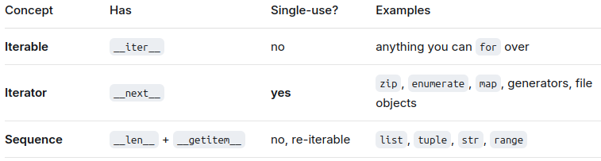

6c-Triangle¶
Notes¶
A nice Pythonic way of obtaining a list of indices sorted based on another list is:
indices_sorted = sorted(range(len(nums)), key=lambda i: nums[i])
range in CPython
[!Note] Iterables, Iterators and Sequences They sound similar, and all of them can be iterated through. But they have differences relevant to the code snippet above:

sortedaccepts any iterable and returns a new list.list.sortacts in-place and returnsNone
Problem¶
An array A consisting of N integers is given. A triplet (P, Q, R) is triangular if 0 ≤ P < Q < R < N and:
A[P] + A[Q] > A[R],
A[Q] + A[R] > A[P],
A[R] + A[P] > A[Q].
For example, consider array A such that:
A[0] = 10 A[1] = 2 A[2] = 5 A[3] = 1 A[4] = 8 A[5] = 20 content_copy
Triplet (0, 2, 4) is triangular.
Write a function:
class Solution { public int solution(int[] A); }
content_copy
that, given an array A consisting of N integers, returns 1 if there exists a triangular triplet for this array and returns 0 otherwise.
For example, given array A such that:
A[0] = 10 A[1] = 2 A[2] = 5 A[3] = 1 A[4] = 8 A[5] = 20 content_copy
the function should return 1, as explained above. Given array A such that:
A[0] = 10 A[1] = 50 A[2] = 5 A[3] = 1 content_copy
the function should return 0.
Write an efficient algorithm for the following assumptions:
N is an integer within the range [0..100,000];
each element of array A is an integer within the range [−2,147,483,648..2,147,483,647].
Code¶
Attempt 2¶
```python
0 ≤ P < Q < R < N¶
Meaning we cannot reuse the same indexes¶
But the key is if: x + y > z, where x < y < z¶
then we know x + z > y and y + z > x are true without checking them¶
Because in both cases, z makes the sum larger than x + y,¶
and both x and y are less than z¶
def solution(A: list): if len(A) < 3: return 0 # si = Sorted Indexes si = sorted(range(len(A)), key=lambda i: A[i]) # print(si) # print([A[i] for i in si]) for i in range(len(si)-2): if A[si[i]] + A[si[i+1]] > A[si[i+2]]: return 1 return 0 ```
Attempt 1¶
- Didn't read the question carefully enough.
0 ≤ P < Q < R < Ndoes meanP, Q and Rcannot be the same numbers- But they are indexes, not numbers in A.
- Triangular numbers can be the same
Test Inputs¶
txt
[]
[1]
[1, 1]
[1, 1, 1]
[1, 3, 1]
[1, 3, 1, 1]
[3, 2, 1]
[4, 3, 2, 0]
Code¶
```python
0 ≤ P < Q < R < N¶
Meaning they cannot be the same number¶
But the key is if: x + y > z, where x < y < z¶
then we know x + z > y and y + z > x are true without checking them¶
Because in both cases, z makes the sum larger than x + y,¶
and both x and y are less than z¶
def solution(A: list): if len(A) < 3: return 0 # si = Sorted Indexes si = sorted(range(len(A)), key=lambda i: A[i]) # print(si) # print([A[i] for i in si]) for i in range(len(si)-2): if A[si[i]] + A[si[i+1]] > A[si[i+2]] and \ A[si[i]] != A[si[i+1]] and \ A[si[i+1]] != A[si[i+2]]: return 1 return 0 ```